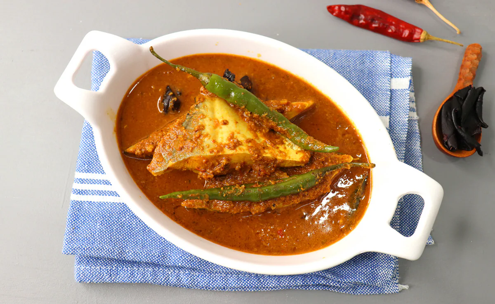
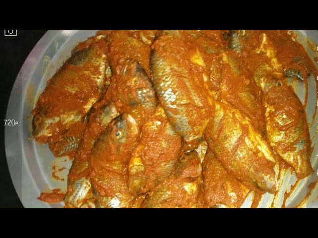
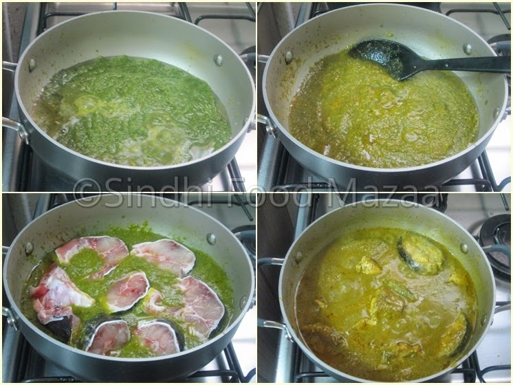
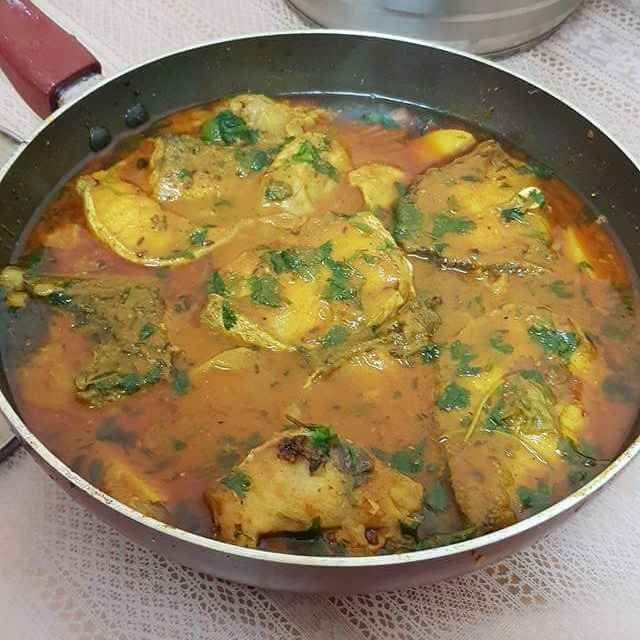
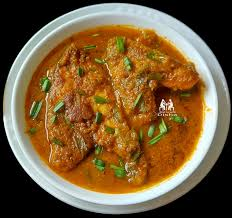
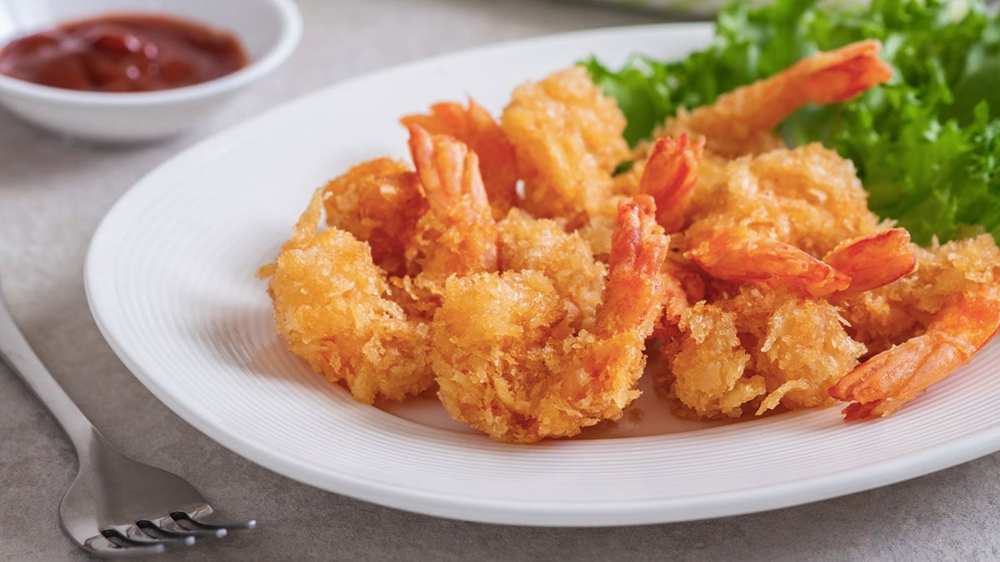
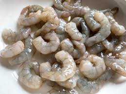
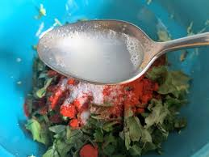
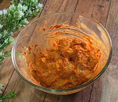

Recipes
Sindhi Fish Curry
Sindhi Fish Curry:
This is a popular recipe from sindhi cuisine which is very easy to make. This delicious fish curry
made with distinct flavor of garlic, tomatoes and some spices.

| Total cook time |
Prep time |
Cook time |
| 25 Mins |
10 Mins |
15 Mins |
Ingredients:
- 6-7 pieces of king fish
- 3-4 green chillies, chopped
- 3-4 garlic cloves, finely chopped
- 2 tomatoes, pureed
- 1 tsp red chilli powder
- 1 tsp coriander powder
- 1/2 tsp haldi
- 3 tsp oil
- Water, as required
- 1 cup coriander leaves
- Salt, to taste
Cooking Process:
- Wash the fish nicely and then sprinkle salt, red chilli powder, haldi, and oil over it. Rub it well to
ensure that the fish is well coated. Set aside to marinate for an hour.
- In the meantime, add coriander leaves, green chillies, and garlic cloves to a mixer grinder and blend
to form a smooth paste.

- Heat oil in a pan and shallow fry the marinated fish pieces evenly from both sides.
- In another pan, add oil along with the prepared coriander paste and some water. Mix well and allow it to
cook for a few minutes.

- Next, add in the coriander powder, red chilli powder, salt, and tomato puree. Add more water if required,
and cook until the gravy comes to a boil.

- Arrange the fish pieces in a bowl and pour the gravy over them. Garnish with fresh coriander leaves, and
serve hot! Sindhi fish curry is ready to be relished.

Prawn Koliwada Recipe
Prawn Koliwada Recipe:
Prawns are marinated in flavourful masalas and then deep-fried to perfection. They make for delectable
seafood appetiser to serve at a dinner party.

| Total cook time |
Prep time |
Cook time |
| 30 Mins |
20 Mins |
10 Mins |
Ingredients:
- 300 gm Prawns
- 1 tbsp Ginger-garlic paste
- 1 tsp Red chilli powder
- 3 tsp Besan
- 2 tsp Maida
- 4 tsp Yogurt
- 1 tsp Oil
- 2 tsp Lemon juice
- 2 tsp Coriander powder
- Salt, to taste
- Oil, for deep-frying
- Chaat masala, as required
- To make this dish, first we need to wash and devein the prawns. Pat them dry and then marinate
with ginger-garlic paste, 1/2 tsp red chilli powder, coriander powder, 1 tsp lemon juice, and salt.
Set it aside for 20–25 minutes.

- Now, squeeze out all the excess moisture from the prawns and add maida, besan, yoghurt, oil, and
the remaining lemon juice and red chilli powder.

- Mix well and coat the prawns nicely with all the masalas.

- Heat oil in a kadhai set on a low-medium flame and start adding the marinated prawns to it in batches.
Deep-fry them until they turn golden brown in colour.
- Once done, transfer to a plate lined with tissue paper to remove excess oil. Sprinkle some chaat masala
on top and enjoy! Maharashtrian prawn koliwada is ready!